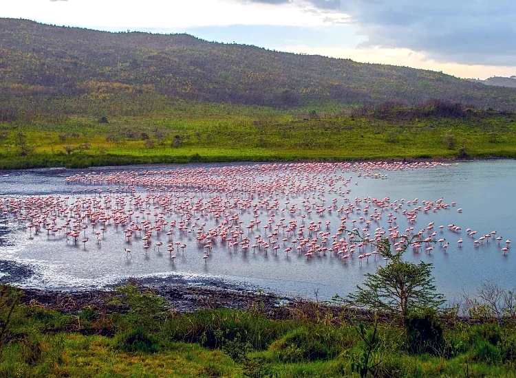
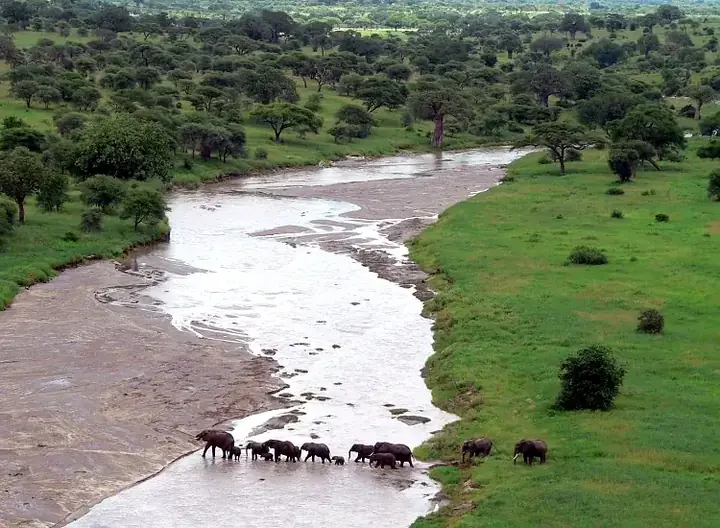
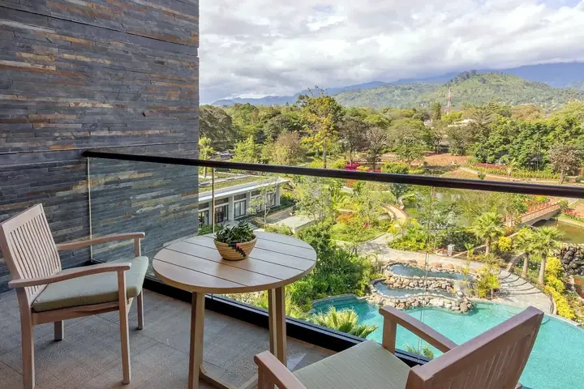

Arusha travel desk • Tanzania
Safaris.
Tours.
Your next story.
Arusha is our base. Kasoko plans wildlife safaris, Manyara and Tanga tours, Zanzibar extensions, hotels, transfers and travel tickets in one simple place.



Choose what you need. Kasoko coordinates the details.
Select a service below and tell us your dates, people and preferences. You can combine services in the same booking request.
Local planningArusha-based routes with practical local detail.
Flexible tripsCombine safari, hotel, transfer and tickets.
Clear confirmationAvailability and current price are checked before payment.
Start in Arusha. Extend across Tanzania.
Choose a home base, then let Kasoko connect safaris, tours, hotels, tickets and transfers around it.
Wild places, thoughtfully planned.
Tanzania’s headline parks plus Tanga routes for travellers who want more than a checklist.
Zanzibar, culture, city and coast.
Short experiences or full-day plans, with hotel nights and transfers added when you need them.
Tell us where you want to sleep.
We check the property, dates, room type and current rate before sending a confirmation.
Flights, buses, ferries, trains and pickups.
Give us the route and dates. Kasoko checks the suitable options and comes back with the current fare before confirmation.
Request a ticketSimple for you. Clear at every step.
- 01Choose a service and tell us what you want.
- 02Review the details before sending the request.
- 03Kasoko checks live availability and contacts you.